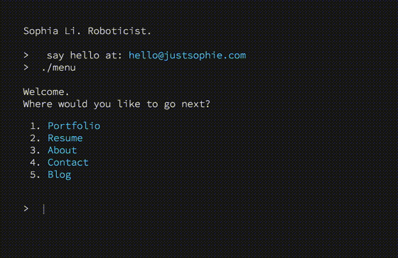
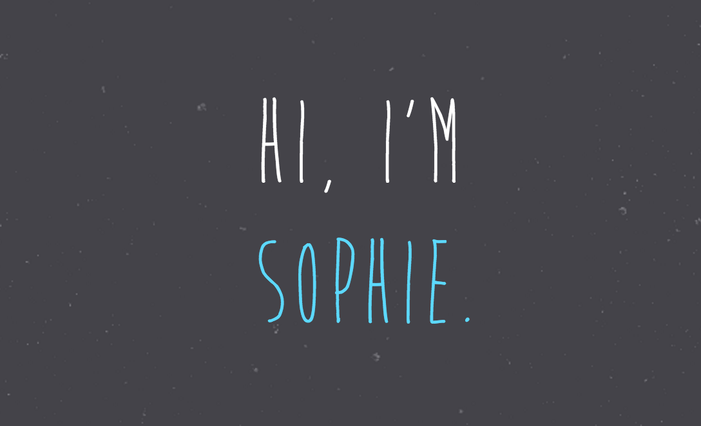
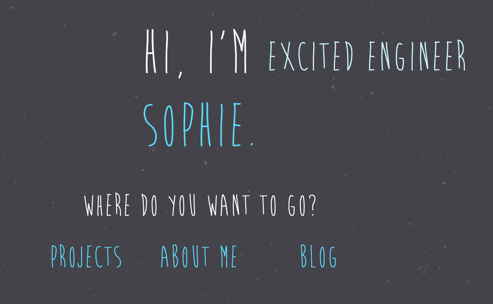
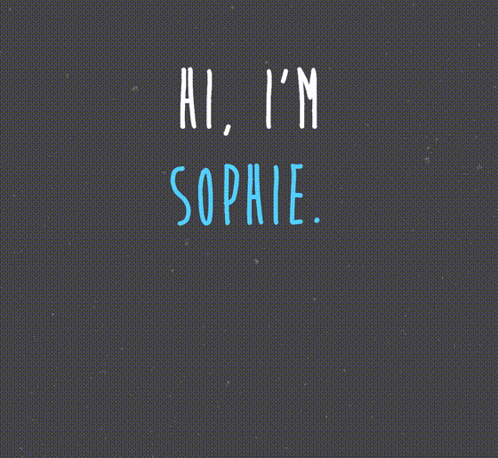
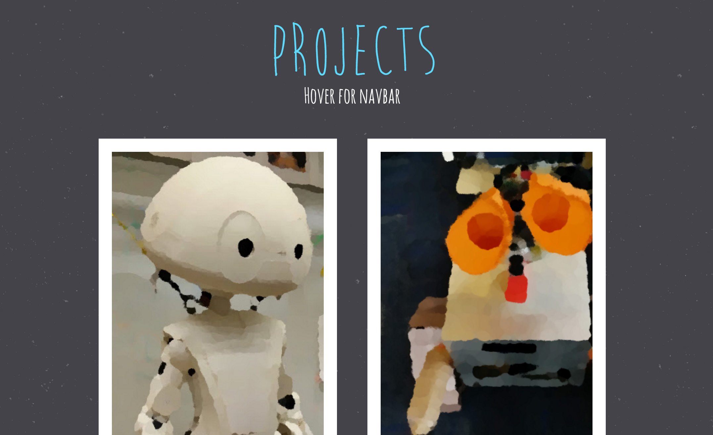
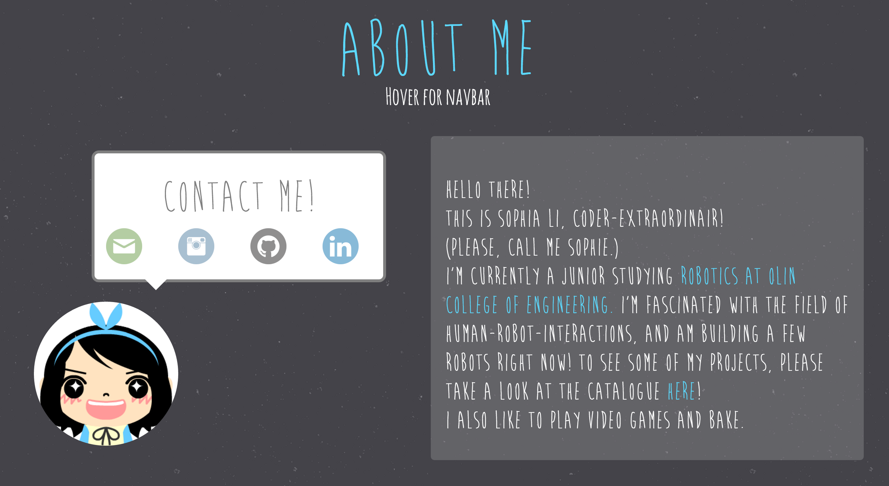
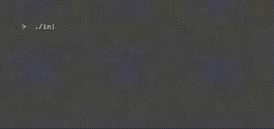
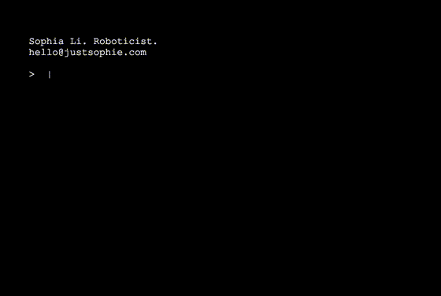
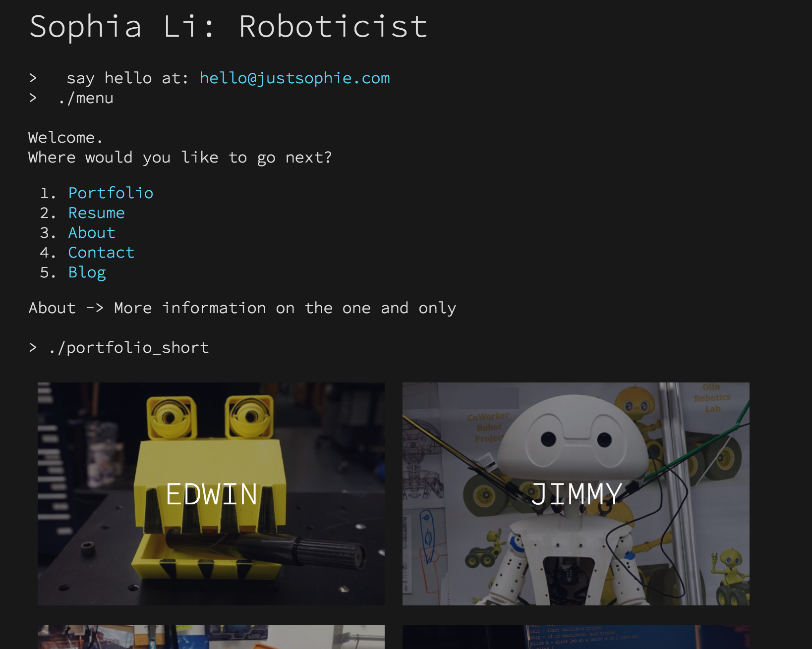

Portfolio.Website
| < | LIST |
> |
website;
edwin;
pseudOS;
pendulum;
desktop_companion;
wall-e;
underwater_vision;
jimmy;
genetic_car;
> ./intro

download source code
> ./stats
Status: In Progress
Languages: HTML5/CSS, javaScript
Software: N/A
Hardware: N/A
Documentation: Complete
> ./documentation
Because all professional adults need to have a website to showcase their work, I decided that I wanted to build a website of my own. The result of this is justsophie.com
The first draft of my website was very "hover"-centric, as I was really excited about learning javaScript. I wanted the home page to be as simple as possible, and to make some sort of statement about myself.

I rather liked this design, but I felt like it needed something more. The result was a descriptor and a menu that popped up whenever you hovered over my name.

I thankfully had the foresight to realize that the un-centered descriptor made the layout of the homepage rather unpleasant to look at. A short revision later lead to this.

Since my website needed to be more than a home page, I also created the other pages to follow the same theme:
Projects

About Me

I really liked the original design, but I somehow couldn't make progress on finishing the project page because of how the theme really limited where I could place elements. I took a step back, and thought about the reasons why it was so difficult to finish the site. My conclusion was that the original theme was much too childish for the image that I wanted to project to visitors to my site. I thought about what defined me, and realized that I spent most of my time working in a terminal window.
Eureka.

The home page is finally starting to take shape! From here, I fleshed out the menu... Does this look familiar?

Once I decided to commit to abandoning my old website, the rest of the design came easily since there was an easy theme to follow that didn't heavily rely on floating divs to make things look good.
From this point, forward, a few incremental changes were made before the final published layout of the home page. One of which was to remove this
In favor of the current static home screen. When I demoed the first iteration of the site to a few friends, one noteable comment I received was that waiting for the menu to show up every time they returned to the home screen was really annoying. I was sad, but realized that their feedback was 100% justified. I'm glad I listened, because the current home screen now displays much more information at a glance.

A visitor can tell right away what kind of person I am, and what kind of projects I've worked on.
All in all, I'm really proud of finally finishing up a project that I've been working on for years and years. There are many things that can be improved, and I'm excited to see how my website will evolve as I get better with jS and HTML/CSS. Stay tuned!
>
|